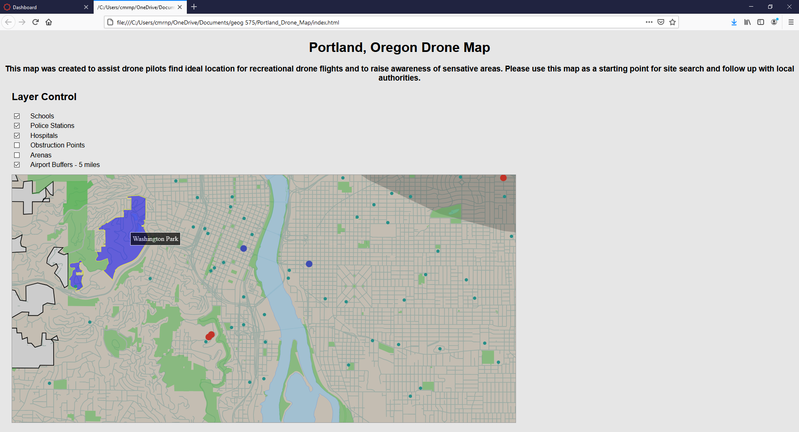
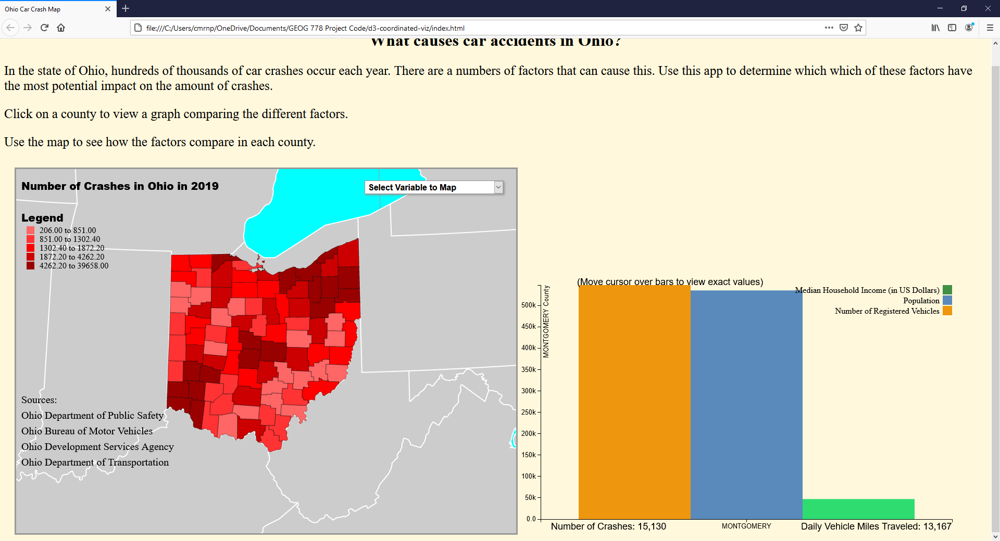

Cameron Billings
Geography Major / GIS Graduate
My name is Cameron Billings and I currently live near Detroit, Michigan. I just graduated from the University of Wisconsin Madison's graduate school with a Masters in Cartography and Geographic Information Systems and am now searching for employment. Since I was a child, I have been insterested in maps and exploring places. I am seeking to use my extensive education in GIS to launch a career in urban planning or similar field.
Please reference my Resume for my qualifications.
Portfolio
(Click on the images for better viewing)

In 2017, for my final project of an Introduction to GIS class, I mapped a phenomenon with a group of students. We chose to map access to drug treatment centers for low income neighborhooods. Using ArcGIS, we mapped out several different drug treatment centers and calculated a 1.25 mile radius around the low income neighborhoods to see if the treatments centers were within a walking distance of neighborhoods.

In Graduate School, I made a bivariate map that was to be added to a longform infographic. This map showed the relationship between median household income and the percent of people in poverty in Michigan counties. This map was made using Indiemapper.

Another GIS assignment was to plan a bike route using a shaded relief. The shaded relief was made using ArcGIS while Adobe Photoshop and Illustrator were used to edit raster colors and vector data.
{kind=link}
In a collaborative project with another student in Graduate School, I developed this map to show areas where drones are restricted in the city of Portland, Oregon using Leaflet.
{kind=link}
My final project for Graduate School. The map and chart were made with Javascript using Data Driven Documents (D3).